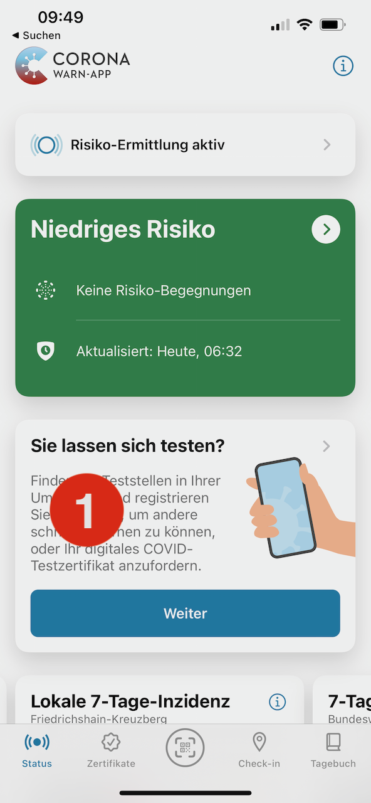
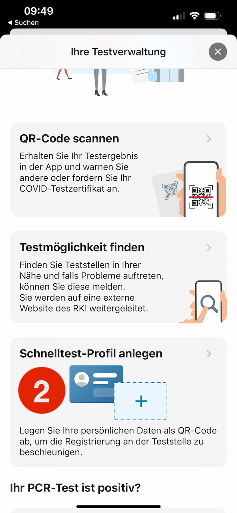
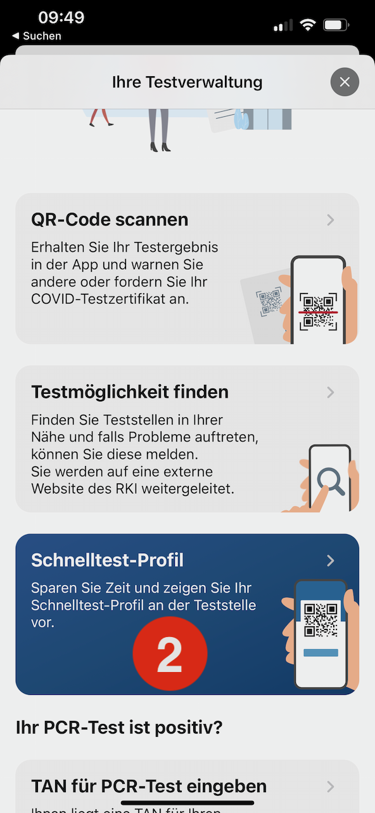

Was ist das Corona-Warn-App Testprofil?
Bei dem Testprofil handelt es sich nicht um ein Impfzertifikat. Es muss separat angelegt werden. Mehr Infos zum Testprofil
Wie erstelle ich mein Corona-Warn-App-Testprofil?
Die Corona-Warn-App öffnen und dann:


Wie zeige ich mein Corona-Warn-App-Testprofil?
Nachdem das Testprofile angelegt wurde, die Corona-Warn-App öffnen und dann:

Werden Daten von mir gespeichert?
Diese Seite speichert keinerlei Daten auf Servern. Alle Daten werden nur temporär und lokal im Browser genutzt und anschließend automatisch gelöscht.